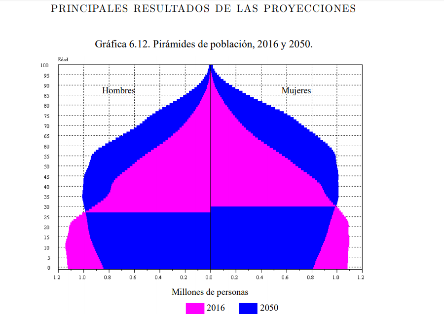

La caída de la fecundidad es una de las principales características de la transformación demográfica regional por la adopción de prácticas culturales de comportamiento compatible con el ideal de familias más pequeñas favorecida por la disponibilidad de procedimientos anticonceptivos, y la inserción de las mujeres en el mundo laboral y no sólo en el hogar.
El descenso de la mortalidad debido al mejoramiento de las condiciones de vida, mayor nivel educativo, políticas de salud exitosa y un avance sin precedentes en el control de las enfermedades infecciosas, han hecho constante el aumento de la esperanza de vida, de 59 años entre 1965 y 1970 a casi 76 años entre 2015 y 2020.
La confluencia de la mortalidad, la fecundidad y la migración, la esperanza de vida son parte de lo que estructura la población por edad, así es que la edad media de la población aumenta de 30.5 años en 2016 hasta 39.5 años en 2050.
El envejecimiento de la población se puede ver cuando se contrastan las pirámides de edades, hay una pérdida neta de 6.8 millones de niños y jóvenes menores de quince años, equiparada con la ganancia de 7.08 millones en la primeras ocho edades de la senectud (60 a 67 años)

http://coepla.zacatecas.gob.mx/wp-content/uploads/2019/02/Proyecciones-de-poblaci%C3%B3n-Parte-2.pdf